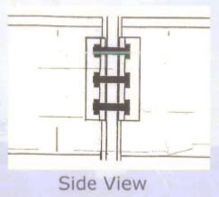
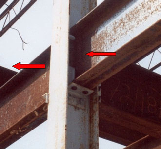

28.B Structural Steel Assembly
28.B.21–28.B.23
28.B.21 Column splices. Each column splice shall be designed to resist a minimum eccentric gravity load of 300 lbs (136.2 kg) located 18 in (45.7 cm) from the extreme outer face of the column in each direction at the top of the column shaft.
28.B.22 Perimeter columns. Perimeter columns shall not be erected unless:
- The perimeter columns extend a minimum of 48 in (121.9 cm) above the finished floor to permit installation of perimeter safety cables prior to erection of the next tier, except where constructability does not allow.
- The perimeter columns have holes or other devices in or attached to perimeter columns at 42-45 in (106.6-114.3 cm) above the finished floor and at the midpoint between the finished floor and the top cable to permit installation of perimeter safety cables except where constructability does not allow.
28.B.23 Open web steel joists.
- a. Except as provided in paragraph 28.B.23.b(2) below, where steel joists are used and columns are not framed in at least two directions with solid web structural steel members, a steel joist shall be field-bolted at the column to provide lateral stability to the column during erection. For the installation of this joist:
- A vertical stabilizer plate shall be provided on each column for steel joists. The plate shall be a minimum of 6-in x 6-in (15.2-cm x 15.2-cm) and shall extend at least 3 in (7.6 cm) below the bottom chord of the joist with a 13/16-in (2.1-cm) hole to provide an attachment point for guying or plumbing cables.
- The bottom chords of steel joists at columns shall be stabilized to prevent rotation during erection.
- Hoisting cables shall not be released until the seat at each end of the steel joist is field-bolted, and each end of the bottom chord is restrained by the column stabilizer plate.
- Where constructability does not allow a steel joist to be installed at the column:
- An alternate means of stabilizing joists shall be installed on both sides near the column and shall:
- Provide stability equivalent to Section 28.B.23.a (1) above,
- Be designed by a QP,
- Be shop installed, and
- Be included in the erection drawings.
- Hoisting cables shall not be released until the seat at each end of the steel joist is field-bolted and the joist is stabilized.
FIGURE 28-1
Controlling Risk for Double Connections in Steel Erection (Side View)

FIGURE 28-2
Double Connection with Seat to Support First Section while Second Section is Being Installed

- Where steel joists at or near columns that span 60 ft (18.3 m) or less, the joist shall be designed and erected by either:
- Installing bridging or otherwise stabilizing the joist prior to releasing the hoisting cable or,
- Releasing the cable without having a worker on the joist.
- Where steel joists at or near columns span more than 60 ft (18.3 m), the joists shall be set in tandem with all bridging installed unless an alternative method of erection, which provides equivalent stability to the steel joist, is designed by a QP and is included in the site-specific Steel Erection Plan.
- A steel joist or steel joist girder shall not be placed on any support structure unless such structure is stabilized.
- When steel joist(s) are landed on a structure, they shall be secured to prevent unintentional displacement prior to installation.
- No modification that affects the strength of a steel joist or steel joist girder shall be made without the approval of the project structural engineer of record.
- Field-bolted joists.
- Except for steel joists that have been pre-assembled into panels, connections of individual steel joists to steel structures in bays of 40 ft (12.1 m) or more shall be fabricated to allow for field bolting during erection.
- These connections shall be field-bolted unless constructability does not allow.
- Steel joists and steel joist girders shall not be used as anchorage points for a fall arrest system unless written approval to do so is obtained from a QP.
- A bridging terminus point shall be established before bridging is installed.
{kind=link}
{kind=link}